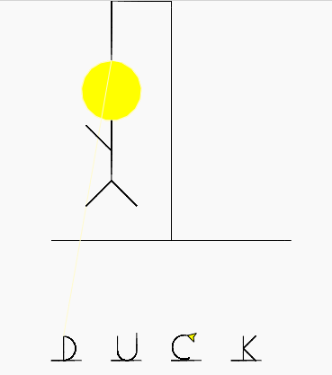
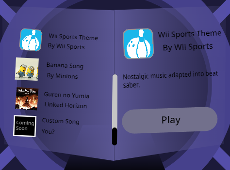
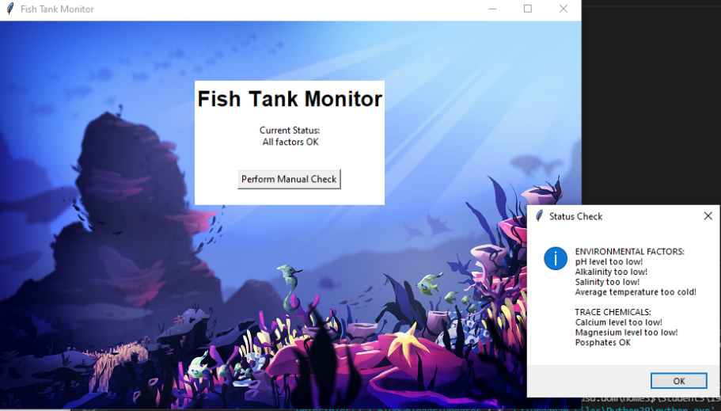

Portfolio
Hangman
Deduce the word or die. A classic game of hangman highlighting the dangers of these foul fowls and the importance of identifying them.
Temple of the Duck

Body the bread. Avoid the spikes. In the most intense 30 seconds of your life, gather as many rations as you can for your pilgrimage.
Duck Saber
Destroy the blocks according to color. A spin off of the orignal beat saber with a duck.
Fish Tank Monitor
Fix monitor and make sure it reports the correct conditions of the fish tank so the fish don't die.
Bug Hunt Predators and Invasive Species
Simulation exploring stability of predator-prey ecosystems and how this stability is affected when new species are introduced to the ecosystem.